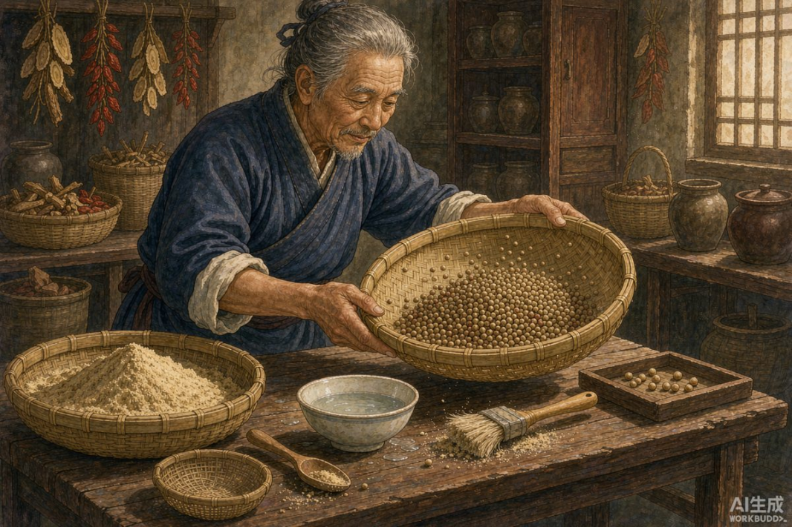
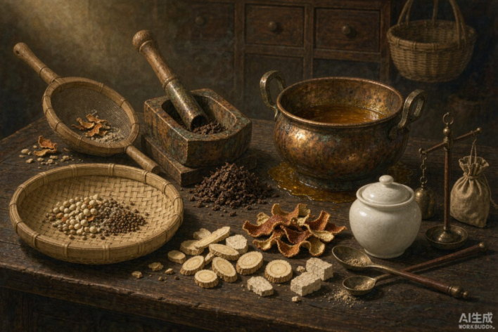
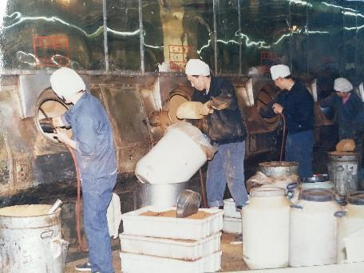
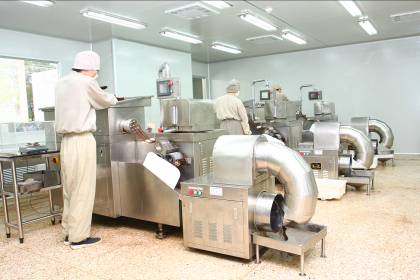

交互演示
V1.0
丸剂的生产演变
丸承三百载
透明示意
全屏

01
第一阶段
源起
竹匾上的手工时代
轻触展开
＋

02
第二阶段
汇流
公私合营与半机械化
轻触展开
＋

03
第三阶段
提速
工艺现代化的三级跳
轻触展开
＋

04
第四阶段
智造
从联动线到智慧工厂
轻触展开
＋
丸
承 · 三 · 百 · 载
手工
→
半机械化
→
现代化
→
智造
轻触任一阶段，展开探索
收起本阶段